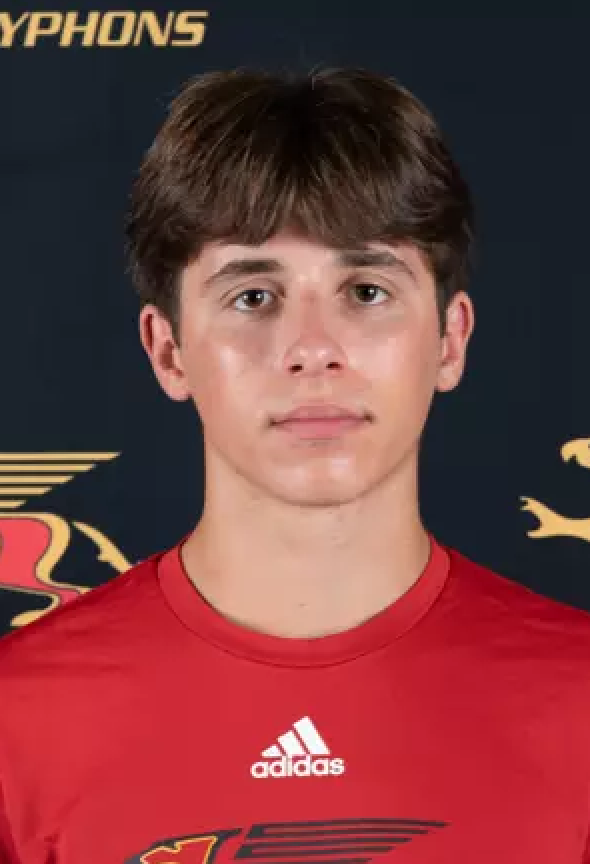
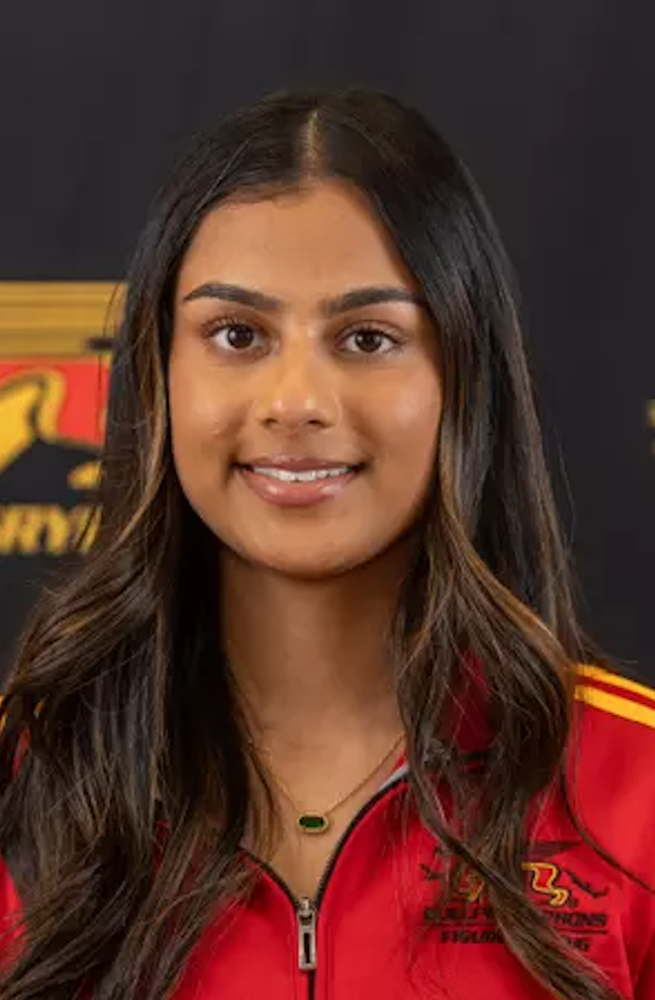
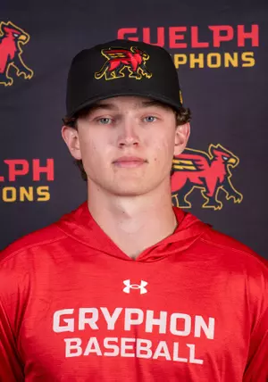
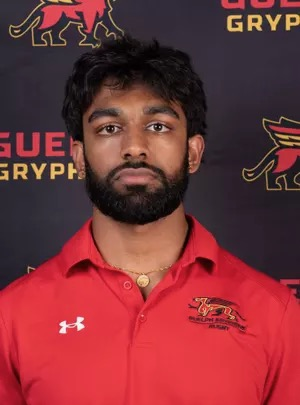
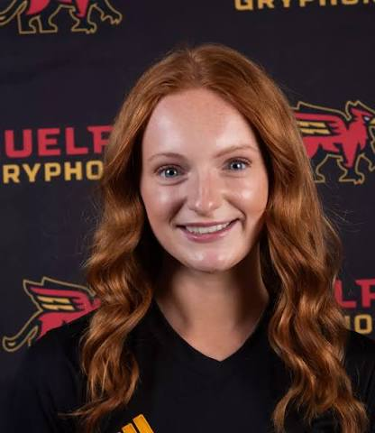
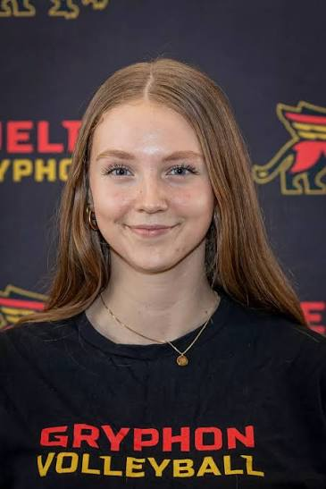
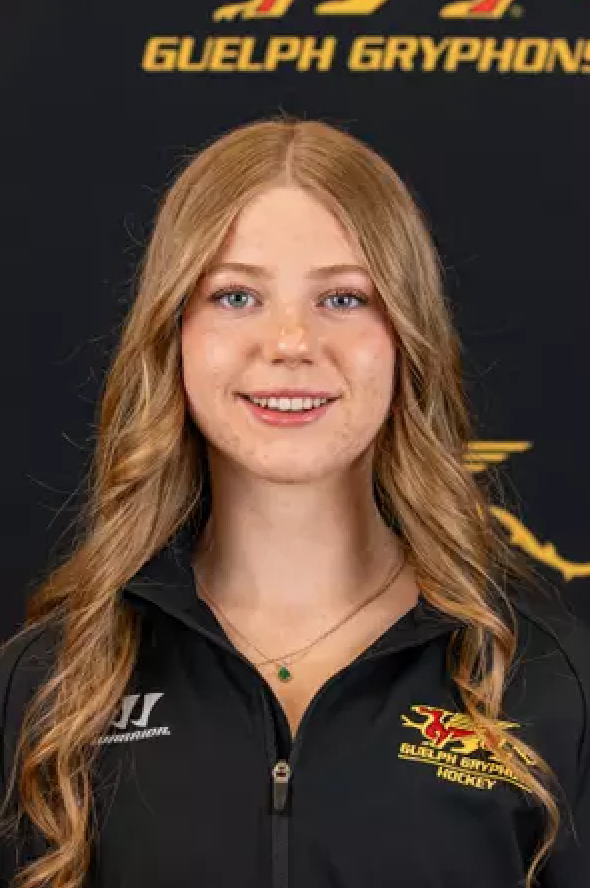
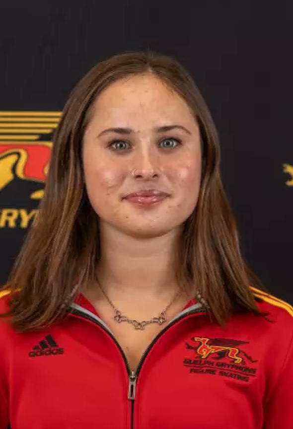

Relay for Life
Over two years, our community raised $1,500 for Relay for Life, bringing teammates together in support of people affected by cancer.
STUDENT LED. GRYPHON DRIVEN.
We’re Athletes in Medicine. A community at the University of Guelph bringing our love of sport to healthcare, learning, and giving back.
members in our community
raised for Relay for Life over two years
our ongoing community partnership
01 / ABOUT AIM
The teamwork we learn in sport has a place beyond the game.
Co-founded by Tanvi Pannu and Evan Cescon, AIM connects students who share an interest in athletics and healthcare. We make room to explore what comes next, learn from people in medicine, and contribute to our community alongside training and classes.
Whether you compete for the Gryphons, play intramurals, or simply enjoy staying active, there’s a place for you here.
Meet people with shared interests, across teams and programs.
Get a closer look at healthcare through workshops and conversations.
Turn a shared commitment into community action.
02 / OUR WORK
Conversations that open doors.
Experiences that bring us together.
Causes worth showing up for.
Over two years, our community raised $1,500 for Relay for Life, bringing teammates together in support of people affected by cancer.
We welcomed an orthopedic surgery resident for a guest speaker workshop, giving students a chance to hear about the path into medicine and surgical training.
We teamed up with the SAM program at Guelph for a collaborative workshop, connecting our members with another source of support on campus.
OUR COMMUNITY PARTNER
AIM is Breast Cancer Canada’s Guelph hub. Our ongoing partnership is a focus for the club as we develop ways for students to get involved and support the breast cancer community.
Connect with us about the partnershipWHAT’S NEXT
Ideas we’re working toward.
Dates and details to come.
03 / THE TEAM
Students, athletes, and the people
bringing AIM to life.

CO-PRESIDENTEvan is a Biomedical Sciences student and varsity swimmer. As co-founder and co-president, he helps bring students together through healthcare exploration and community service.

CO-PRESIDENTTanvi is a Gryphon figure skater who has been skating since age four. As co-founder and co-president, she brings her passion for sport and the Guelph community to AIM.

EVENTS CO-COORDINATOREvan studies Human Kinetics and plays on the baseball team. He helps coordinate AIM events that connect students across sports and introduce them to opportunities in healthcare.

PHOTOGRAPHYEesh helps tell AIM’s story through photography, capturing the people and moments behind our events and giving our community a way to look back on what we do together.

SOCIAL MEDIA MANAGERJuliette keeps our community connected through social media, sharing club updates, highlighting events, and helping students discover how to get involved with AIM.

FINANCE MINISTERMairin supports the planning behind AIM’s events and initiatives by managing club finances, helping the team make thoughtful use of its resources.

SOCIAL MEDIA MANAGERMyriam studies Neuroscience and plays varsity women’s hockey. Originally from Guelph, she brings her enthusiasm for the Gryphon community to AIM’s social media.

MARKETING MANAGERTegan studies Environmental Science and is a Gryphon figure skater. She helps share AIM’s activities with the wider campus community and welcome new members.
04 / GET INVOLVED
Curious about healthcare? Passionate about sport?
We’d love to meet you. All levels of athletic experience welcome.